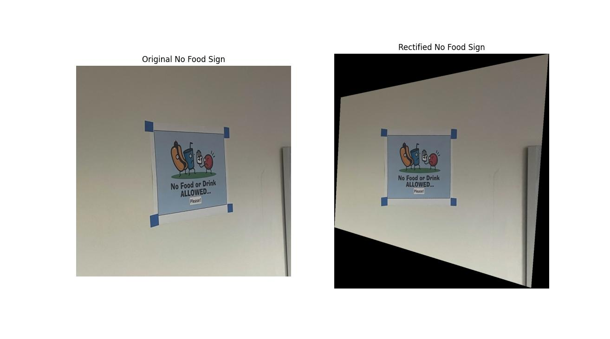
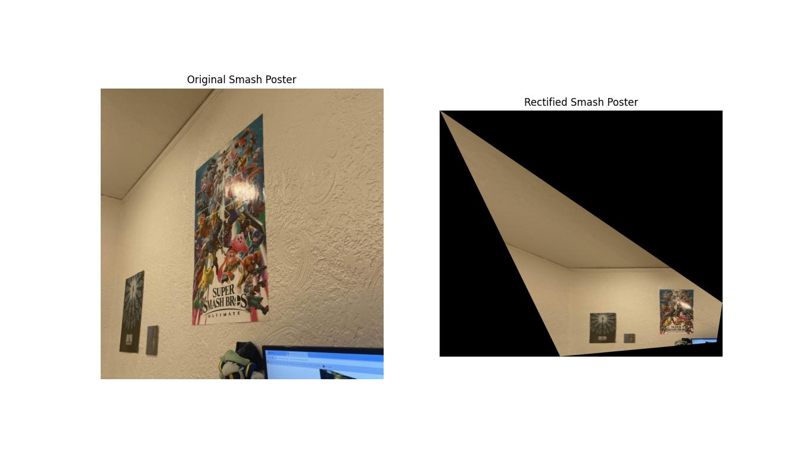
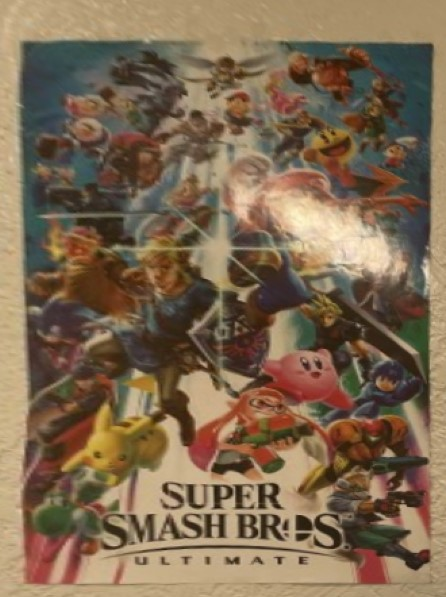
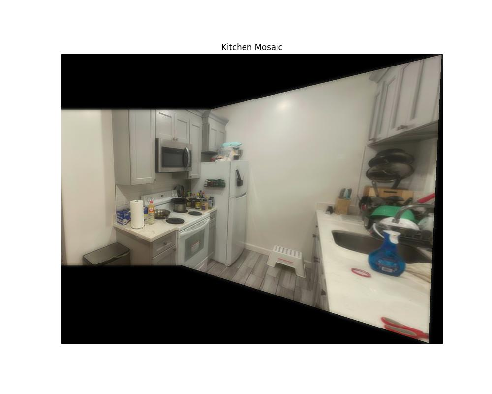
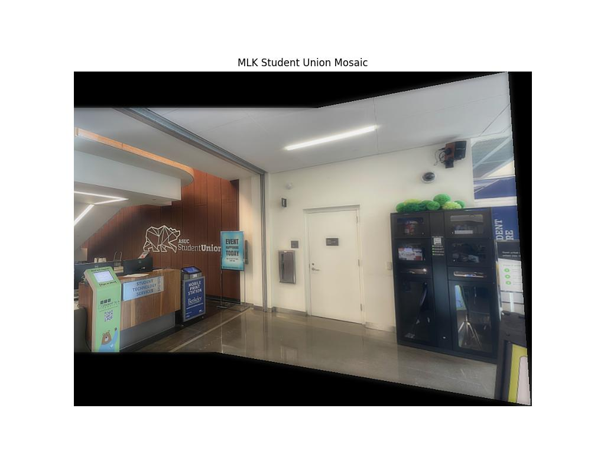
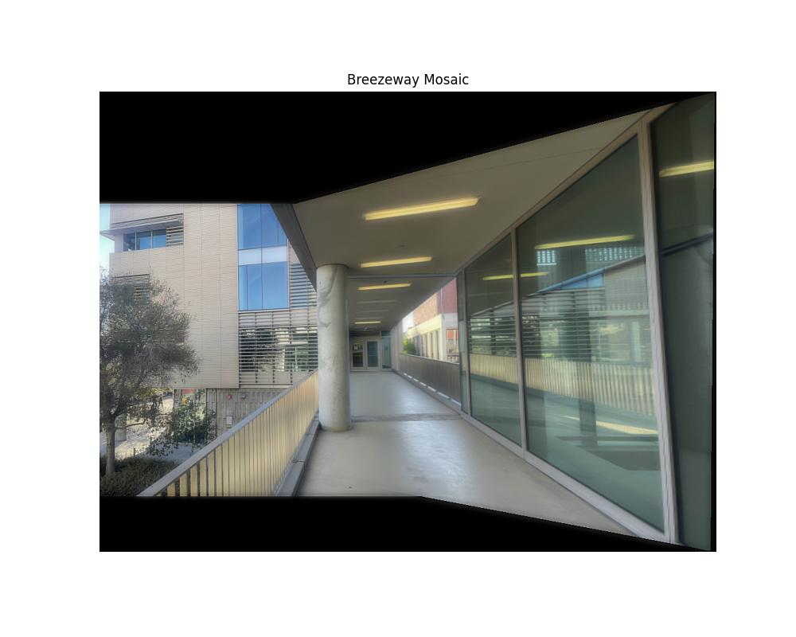

All photos are taken using my phone, with a slight rotation between each pair.
I wrote a computeH function that computes the homography matrix that is able to perform a transformation that can move the target image in any direction or angle (8 degrees of freedom). The homography matrix has 8 unknowns so we need at least 4 keypoint pairs. I ended up providing more than 4 pairs of points, and used least squares to find the optimal H.
After calculating H, we can warp one image to the other, using a similar interpolation approach as in Project 3: I map every pixel in the output image back to the corresponding location using the inverse H matrix, using map_coordinates when necessary to interpolate pixel values.
Using this warping, I am able to rectify some angled views of rectangular objects and warp them to a regular rectangular shape, showing what they would look like from a frontal view.



Zoomed Rectified Smash Poster
Using these warps, we can also create a mosaic. We warp one image onto the other using a set of keypoints. Simply placing these images on top of each other creates rough edges, so we use a multi-resolution blending approach similar to that in Project 2, creating a mask and using Gaussian and Laplacian stacks to blend the two images together. This creates these final mosaics:


